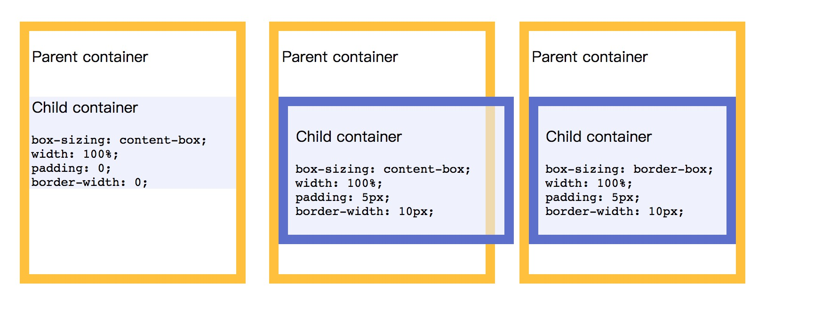

box-sizing介绍
就是width = contentWidth(content-box) 或者是 width = padding+border+contentWidth(border-box)
/* Keyword values */ box-sizing: content-box; box-sizing: border-box; /* Global values */ box-sizing: inherit; box-sizing: initial; box-sizing: unset;
了解BFC之前需要先了解BOX
box是css的最基本单位，元素的类型和diplay决定了box的类型，不同的box，会参与不同的formatting context(如何渲染文档的容器)容器的盒子有block-level box:display 属性为 block, list-item, table 的元素 inline-level box:display 属性为 inline, inline-block, inline-table
BFC(Block formatting context)直译为"块级格式化上下文"。它是一个独立的渲染区域，只有Block-level box参与， 它规定了内部的Block-level Box如何布局，并且与这个区域外部毫不相干。
BFC布局规则：
内部的Box会在垂直方向，一个接一个地放置。 Box垂直方向的距离由margin决定。属于同一个BFC的两个相邻Box的margin会发生重叠 每个元素的margin box的左边, 与包含块border box的左边相接触(对于从左往右的格式化，否则相反)。即使存在浮动也是如此。 BFC的区域不会与float box重叠。 BFC就是页面上的一个隔离的独立容器，容器里面的子元素不会影响到外面的元素。反之也如此。 计算BFC的高度时，浮动元素也参与计算。
哪些元素会生成BFC?
根元素 float属性不为none position为absolute或fixed display为inline-block, table-cell, table-caption, flex, inline-flex overflow不为visible
参考原文博客地址:https://www.w3ctech.com/topic/865